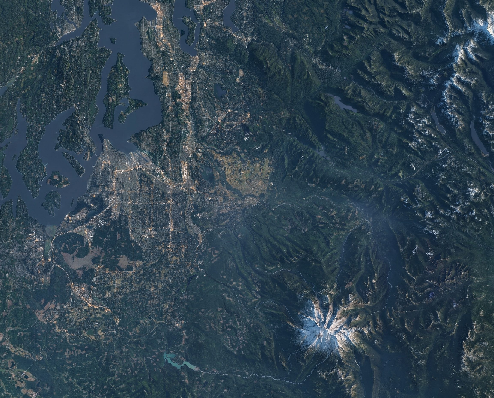

PNW ADU — accessory dwelling units built on the plateau
Quality work for the people who live on the plateau.Buckley · Enumclaw · and out
A second home in your backyard. Buckley, Enumclaw and out.
A backyard home for your parents, your grown kids, or a renter. Built on your lot, permitted where you live.
What we build
Five ways to add a home.
Every one is a real home — kitchen, bath, its own front door. Which one fits depends on your lot, your house, and what the county allows.
Tap a bubble
Garage conversion
The garage you don't park in becomes a one-bedroom with its own door. Often the quickest way to a second home.
Set up a consultationThe first question
Can I build one on my lot?
Washington rewrote the rules in 2023 and again in 2026. Most homeowners don't know what their lot allows now.
Not sure which you are? Look up your address: Pierce Public GIS ↗King County iMap ↗
Tap where your house is.
Rules as of Sept 2026. We confirm on the lot walk.
Set up a consultationWhere we work
The plateau, and the lots around it.
Home base is Buckley. If your lot is inside the ring, we'll come walk it.
TapClick a town

How it goes
We handle it start to finish.
The lot walk, the design and permits, the build, the keys. One crew, one number to call.
Set up a consultation